Ligo, Wolgan Valley
A black tiny house for two on 100 acres of bush in the Wolgan Valley, with a triangle window onto the escarpment.
Best Nature StayAirbnb Host Awards, 2025 winner
3 PM
Arrive in the afternoon
Check in between 3 and 6pm. Eddie or Ange drive you into the valley by 4WD.
DUSK
Run the outdoor bath
The bath sits on the deck, facing the cliffs as the light goes.
NIGHT
The Milky Way after dark
There's no TV and no phone reception here. Light the fire pit and watch the Milky Way come out.
The house
An architect-designed tiny house, faceted and black outside, lined in warm ply inside. The bed sits under the big triangle window, so the escarpment is the first thing you see.
Passive heating and cooling, lofted ceilings and double-glazed windows keep it comfortable. The main house is about 100 metres away, out of sight in the bush.
- Sleeps
- Two, in one bed under the triangle window.
- Kitchenette
- Mini fridge, microwave, induction cooktop, toaster, French press and stove-top espresso maker. Coffee, organic tea, olive oil, salt and pepper are supplied.
- Bathroom
- Rainfall shower with gas hot water, from the rainwater tanks, and a waterless compost toilet.
- Inside
- Books, board games and a Bluetooth speaker. No wifi, TV or phone reception.
- Outside
- The outdoor bath, a fire pit, a hammock, a barbecue and outdoor dining.
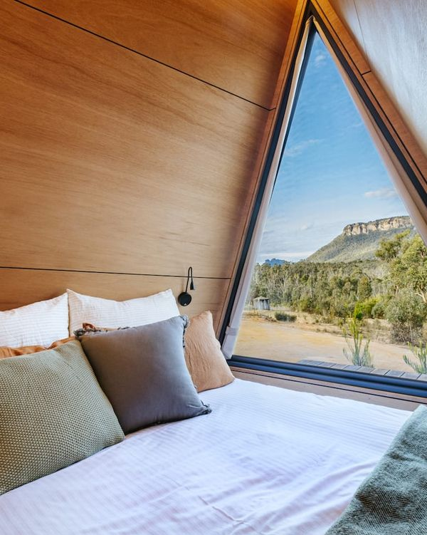
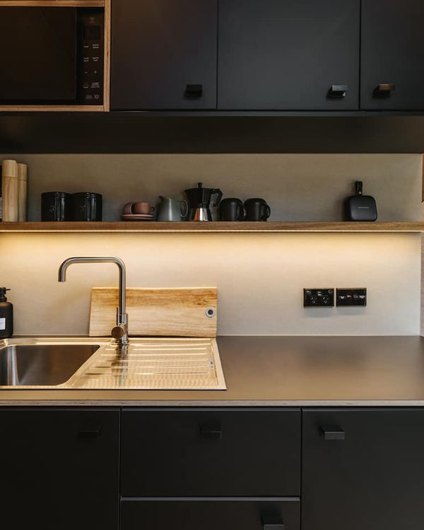
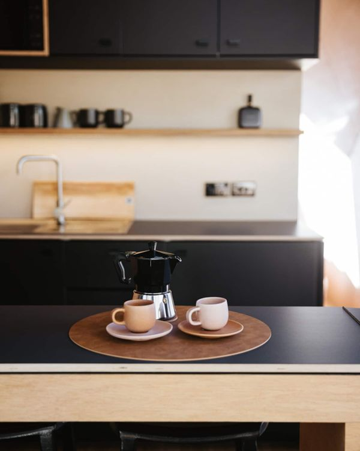
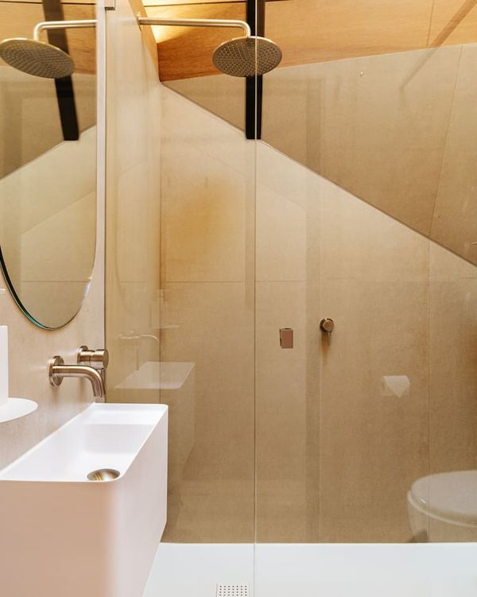
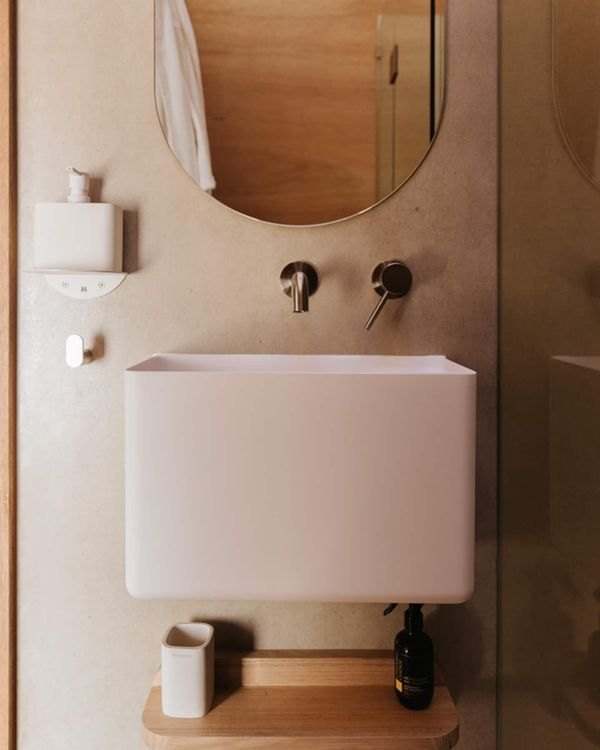
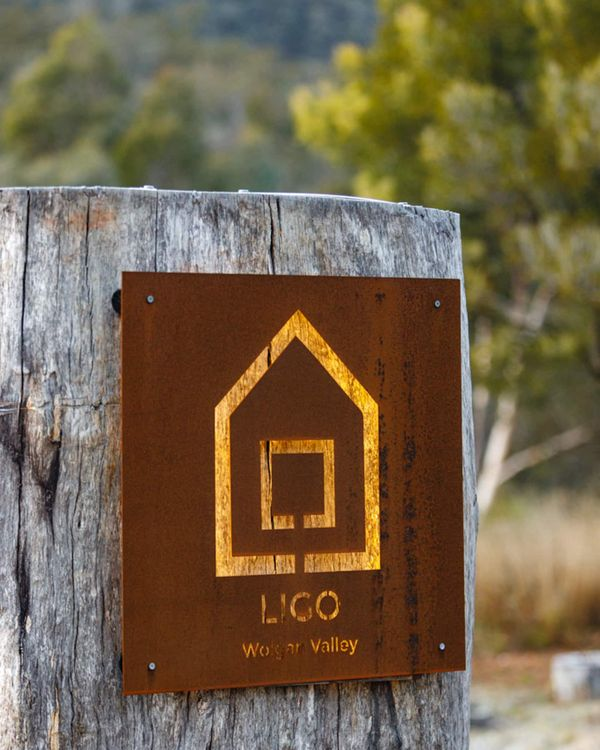
100 acres, and the national park all round
Bushland and riverfront, with trails under the gums and along the riverbank. The Greater Blue Mountains World Heritage parks surround the valley, and the sandstone escarpment shows between the trees.
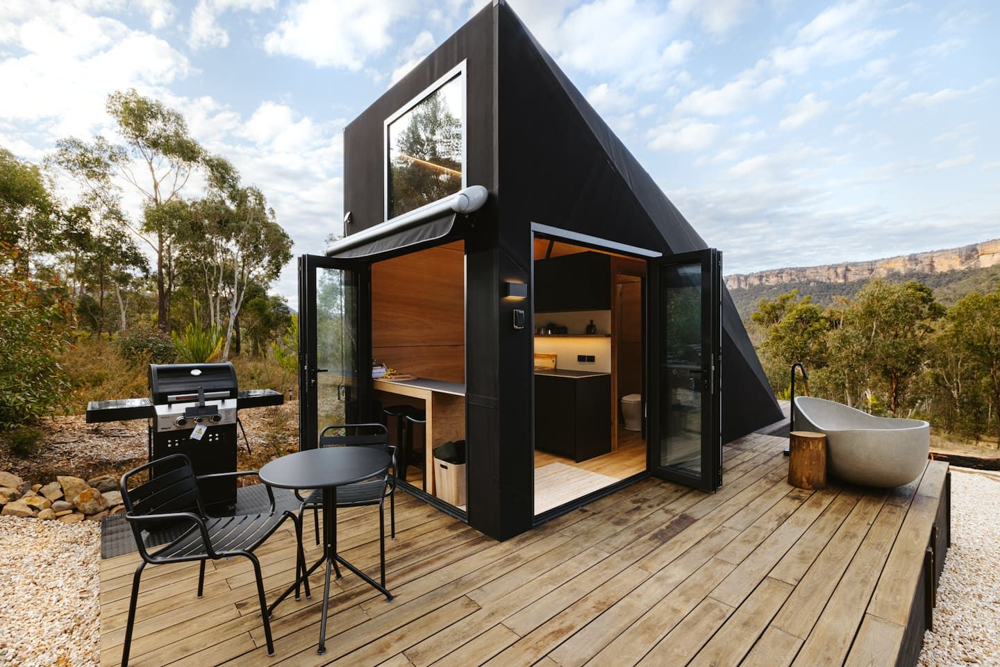
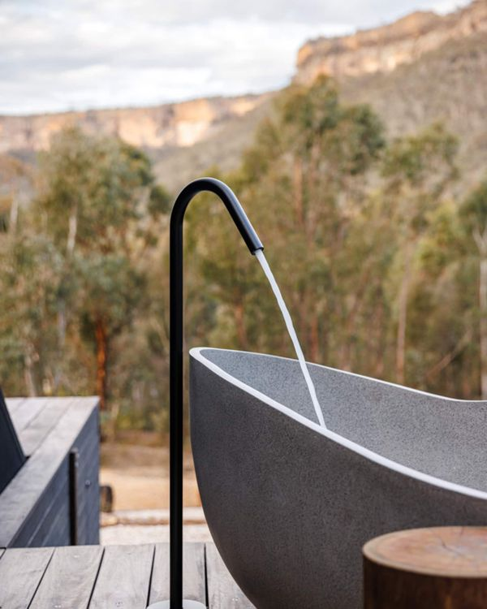
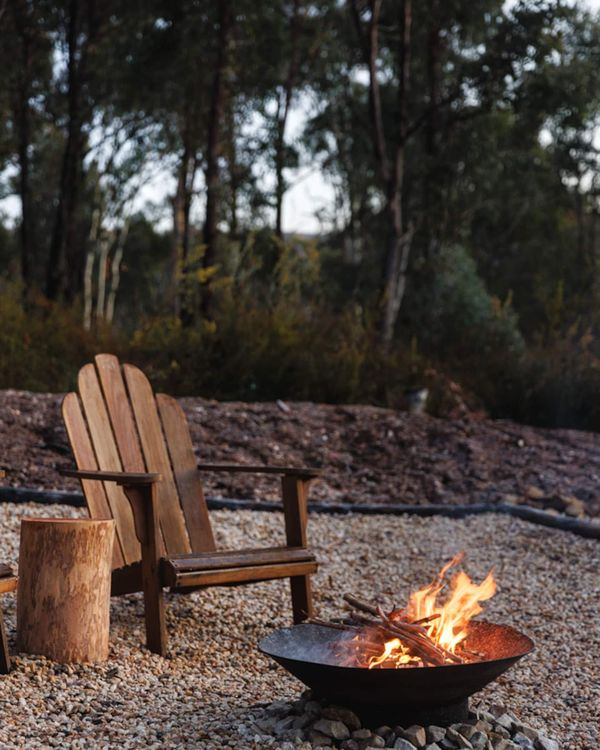
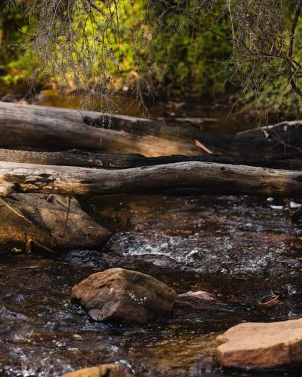
Wildlife. Kangaroos and wombats are about. So are snakes and lizards, so stick to the paths.
The fire pit. Some timber is supplied, and you can gather fallen kindling. No fires at all on fire-ban days.
Getting in
Just over two hours' drive from Sydney. Since the 2022 landslide closed the old road through the Wolgan Gap, the way in is a steep 4WD track behind a locked gate, so the hosts bring you in.
- Shop on the wayThere's nothing to buy in the valley. Stock up in Lithgow or Wallerawang.
- Park and transferLeave your car at the offsite car park. The 4WD transfer in and out is included.
- Check in, 3 to 6pmSoft bags pack in more easily than hard cases.
- Leave at 11amYou're collected from Ligo and driven back to your car.
Experienced 4WD drivers can ask about driving in under escort. Extra trips out during a stay run 10am to 6pm, booked ahead, at a fee.
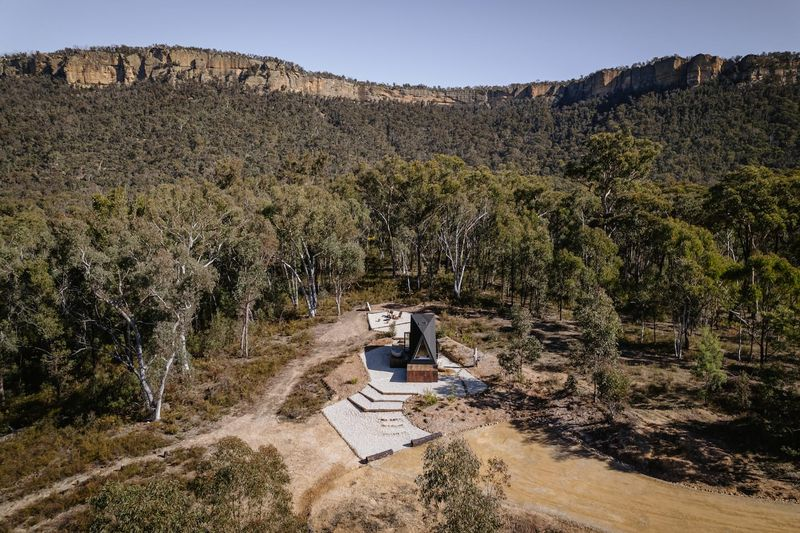
What guests say
4.98from 133 reviews on Airbnb, where it's a Guest favourite
"We thoroughly enjoyed our stay and loved the fact the digital world couldn't reach us."
John, Airbnb, June 2026
"The transfer into the valley was such a great touch and made everything so easy."
Ashlee, Airbnb, October 2026
"Chilly nights, full moons, and a sea of stars."
Caroline, Airbnb, August 2026
Check dates
For two adults. No pets, because the property is surrounded by national park.
- Self-catered. Bring all your food.
- No wifi or phone reception. Satellite internet is there for emergencies only.
- Only booked guests at the property, children and infants included. No parties.
- No smoking or vaping inside. The bush around is bushfire country.
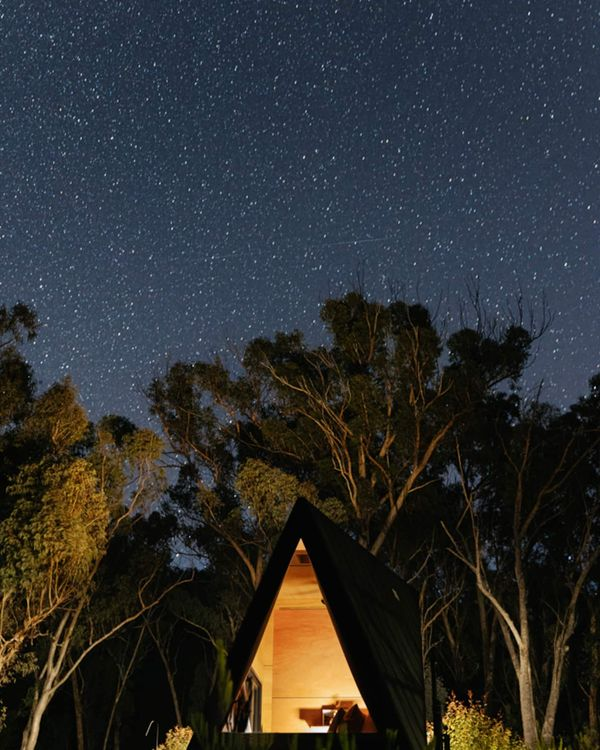
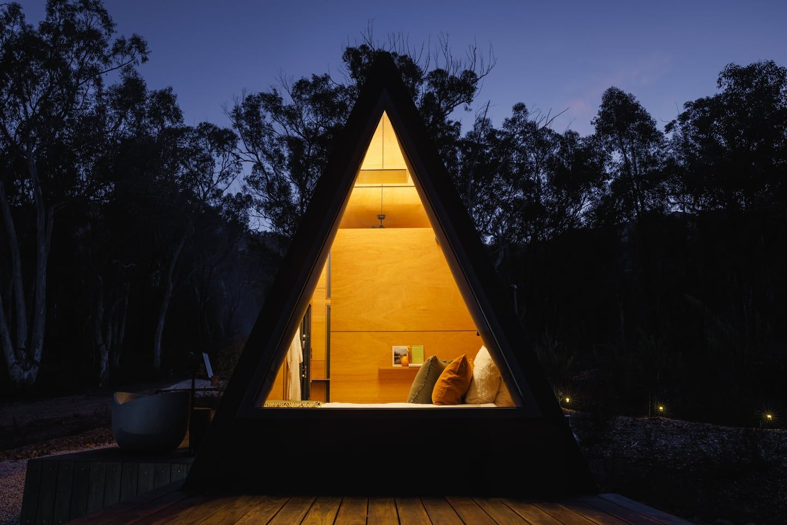
See you in the Wolgan Valley.
Ligo, by Tiny Two, in the Wolgan Valley, New South Wales.